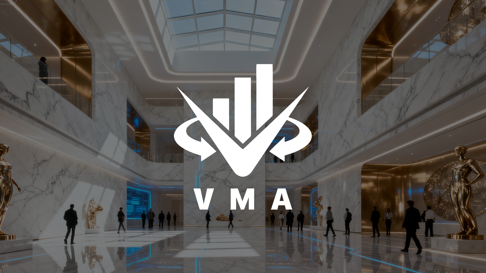

Financial foundations
Clear explanations help investors understand market structure, asset behavior, portfolio thinking and the language used across modern finance.
VMA Community brings together financial education, professional perspective, practical training and QuantCore AI insight so investors can approach complex markets with stronger knowledge, sharper discipline and a clearer sense of responsibility.
Markets move quickly, but lasting investment capability is not built through speed alone. VMA Community emphasizes the combination of knowledge, judgment, process and risk awareness.
Members encounter a connected learning experience rather than a collection of isolated tips. Concepts are introduced in context, discussed with practical examples and reinforced through a community that values questions, evidence and continuous improvement. The objective is not to replace personal responsibility. It is to give investors a stronger framework for making their own informed decisions.
Clear explanations help investors understand market structure, asset behavior, portfolio thinking and the language used across modern finance.
Experienced financial professionals bring practical context to concepts that can otherwise feel abstract, fragmented or difficult to apply.
QuantCore AI helps organize market information and identify patterns so members can study change with greater efficiency and perspective.
Learning includes the discipline to question claims, recognize common warning signs and understand the limits of every method and model.

QuantCore AI is positioned as an analytical support system within the VMA Community learning experience.
It can help organize changing market information, observe patterns across multiple data points and present structured perspectives for discussion. VMA Community combines this analytical capacity with human judgment, educational explanation and transparent risk awareness. The system is not presented as a guarantee or a substitute for independent thinking. Its value lies in making complex information more approachable and helping investors ask better questions.
Organizes relevant movement and signals into a clearer research view.
Supports more focused study based on the topics and risks an investor needs to understand.
Begin with the concepts, vocabulary and relationships that shape markets and investment decisions.
Study how economic events, sentiment, information and risk can interact across changing conditions.
Use structured exercises and practical discussion to turn theory into a method that can be reviewed and improved.
Evaluate outcomes, revisit assumptions and strengthen the habits that support long-term investor development.
Explore practical articles on learning, technology, risk and the habits that turn information into a disciplined process.
A structured look at the knowledge, practice and reflection that support lasting capability.
Read articleWhy AI works best when analytical efficiency is paired with human judgment and transparent limits.
Read articlePractical habits that help investors examine claims, sources and incentives more carefully.
Read articleDiscover the principles, tools and learning environment behind VMA Community.